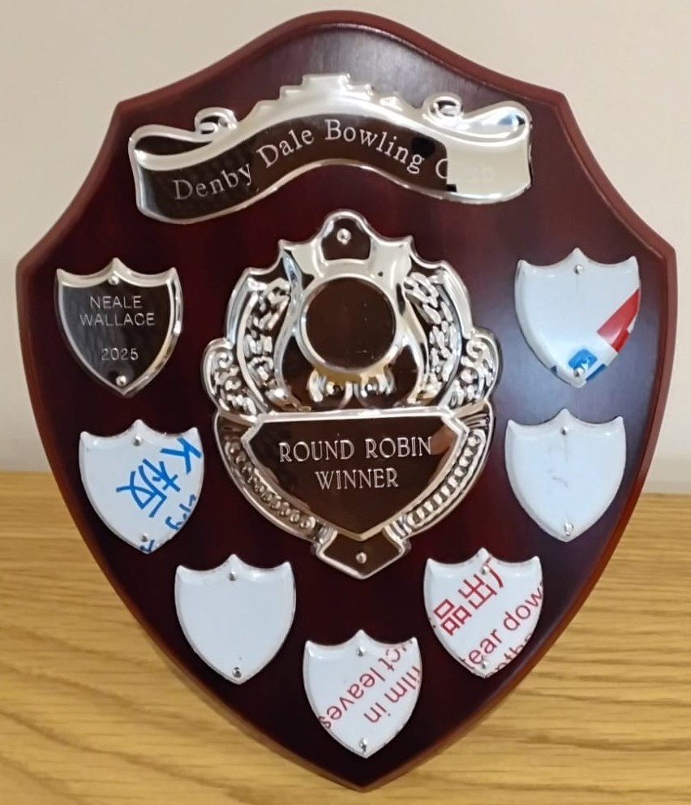

Denby Dale Bowling Club Trophy Cabinet
On this page we present details of the cups and trophies presented to members of Denby Dale Bowling Club over the years, along with a brief history of each trophy and a list of winners.
The Longley Trophy
This trophy was presented to the Denby Dale Working Men's Club in 1961, presumably for the use of the Bowling Club. The trophy has been awarded both for Ladies Pairs and Mixed Pairs. From 2025 this trophy will be awarded to the winner of the Ladies Singles club competition.

| Year | Winners |
|---|---|
| 1995 | J R Hirst
Mrs J Beaumont |
| 1996 | P Hoyle
Mrs M Marsden |
| 1997 | E C Mellor
Mrs L Penny |
| 1998 | M J Brady
Mrs J Beaumont |
| 1999 | M J Peace
Mrs P Hoyle |
| 2000 | P Hoyle
Mrs M Marsden |
| 2001 | M J Peace
Mrs P Hoyle |
| 2002 | P Hoyle
Mrs M Marsden |
| 2003 | R Horne
Mrs V Heywood |
| 2004 | M J Peace
Mrs P Hoyle |
| 2005 | P Hoyle
Mrs M Marsden |
| 2006 | S Whitwham
Mrs L Penny |
| 2007 | M J Peace
Mrs P Hoyle |
| 2008 | M J Peace
Mrs P Hoyle |
| 2009 | Mr & Mrs L Holt |
| 2010 | Mr M Peace
Mrs P Hoyle |
| 2012 | Mrs P Marsden
Mrs S Wain |
| 2013 | Mrs P Hoyle
Mrs S Gaunt |
| 2019 | Mr R Beastall
Mrs S Wain |
| 2025 | Susan Black |
Cyril Tingay Memorial Rosebowl
This trophy was awarded for Ladies Singles 1984 - 2015, then for Ladies Pairs 2016, 2018 and 2019. From 2025 this trophy will be awarded to the winner of the Men's Singles club competition.

| Year | Winner |
|---|---|
| 1984 | Miss J C Mitchell |
| 1985 | Mrs J Wood |
| 1986 | Mrs C Hirst |
| 1987 | Mrs H Hinchliffe |
| 1988 | Miss P Beever |
| 1989 | Mrs M Fisher |
| 1990 | Mrs J Wood |
| 1991 | Mrs M L Lockwood |
| 1992 | Mrs M L Lockwood |
| 1993 | Mrs J Beaumont |
| 1994 | Mrs V Haigh |
| 1995 | Mrs J Beaumont |
| 1996 | Mrs L Penny |
| 1997 | Mrs L Penny |
| 1998 | Mrs L Penny |
| 1999 | Mrs M Fisher |
| 2000 | Mrs P Hoyle |
| 2001 | Mrs P Hoyle |
| 2002 | Mrs P Hoyle |
| 2003 | Mrs L Penny |
| 2004 | Mrs M Marsden |
| 2005 | Mrs L Penny |
| 2006 | Mrs S Gaunt |
| 2007 | Mrs M Fisher |
| 2008 | Mrs P Hoyle |
| 2009 | Mrs P Hoyle |
| 2010 | Mrs P Hoyle |
| 2011 | Mrs P Hoyle |
| 2012 | Mrs R Dewhirst |
| 2013 | Mrs P Hoyle |
| 2014 | Mrs R Dewhirst |
| 2015 | Mrs R Dewhirst |
| 2016 | M Barraclough R Dewhirst |
| 2018 | H Sansom J Beastall |
| 2019 | D Swaine J Depledge |
| 2025 | Stuart Simmons |
E & A Kilner Memorial Rosebowl
Awarded for Mixed Pairs between 1988 and 2015, and again in 2025.

| Year | Winner |
|---|---|
| 1988 | E Daniel Mrs E Wood |
| 1989 | W Morris Mrs J Daniel |
| 1990 | F K Fisher Mrs J Beaumont |
| 1991 | G Firth Mrs J Beaumont |
| 1992 | R Mallinson Mrs C Hirst |
| 1993 | J D Haigh Mrs M L Lockwood |
| 1994 | S A Whitwham Mrs L Penny |
| 1995 | I Yeardley Mrs M Marsden |
| 1996 | K Dore Mrs M Fisher |
| 1997 | M Brady Mrs P Hoyle |
| 1998 | M J Peace Mrs S Moffatt |
| 1999 | R Tyas Mrs M Marsden |
| 2000 | R Thomas Mrs P Hoyle |
| 2001 | R Walmsley Mrs L Penny |
| 2002 | R Turner Mrs M Marsden |
| 2003 | K Dore Mrs P Hoyle |
| 2004 | K Dore Miss J Hardy |
| 2005 | L Holt Mrs V Heywood |
| 2006 | P Hoyle Mrs P Hoyle |
| 2007 | M J Peace Mrs C Thomas |
| 2008 | L Holt Mrs C Mitchell |
| 2010 | M Peace Mrs P Wright |
| 2014 | Mr I Wright Mrs P Wright |
| 2015 | Mrs J Depledge Mr L Holt |
| 2025 | Karen Taylor David Barraclough |
Ladies Averages Shield
This trophy was awarded for the Ladies Section Averages Winners between 2000 and 2018.

| Year | Winner |
|---|---|
| 2000 | P Hoyle |
| 2001 | P Hoyle |
| 2002 | L Penny |
| 2003 | L Penny |
| 2004 | J Hardy |
| 2005 | J Beaumont |
| 2006 | L Penny |
| 2007 | P Hoyle |
| 2008 | P Hoyle |
| 2009 | P Hoyle |
| 2010 | P Hoyle |
| 2011 | P Hoyle |
| 2012 | V Haywood |
| 2013 | R Dewhirst |
| 2014 | P Hoyle |
| 2015 | R Dewhirst |
| 2016 | S Burton |
| 2017 | S Wain |
| 2018 | J Maddrell |
Round Robin Shield
This new shield for 2025 is awarded to the highest average score across the Round Robin season.

| Year | Winner |
|---|---|
| 2025 | Neale Wallace |